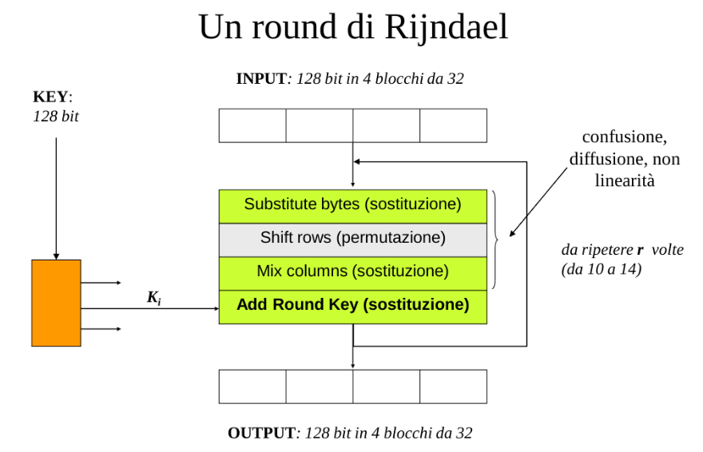

La crittografia simmetrica studia i Cifrari a chiave segreta, questi vengono usati per proteggere la riservatezza di documenti, generazione di numeri pseudo casuali, autentificazione e identificazione.
I cifrari hanno quattro caratteristiche:
Funzionamento di un cifrario simmetrico:
In generale $m$ è una parte del testo in chiaro $M$ che $A$ vorrà inviare a $B$. Proprio sulla natura di $m$ si basa la distinzione che viene effettuata sugli algoritmi simmetrici:
Utilizzano una trasformazione variabile al progredire del testo ottenuta tramite funzioni XOR.
La chiave è una sequenza pseudocasuale di bit lunga quanti il testo da cifrare.
Sia in trasmissione che in ricezione si utilizzano dei generatori di flusso di chiave (i prng) per garantire la sincronizzazione tra i due flussi.
Le chiavi in questo modo sono periodiche, quindi per garantire sicurezza si deve avere un periodo più lungo e ogni volta si utilizza un seed diverso per generare le chiavi.
Ad oggi esistono due tipi di cifrario a flusso:
Nei primi il flusso di bit di chiave viene generato in modo indipendente dal flusso dei bit di testo. Nel momento in cui sorgente e destinazione si disallineano, devono fare ripartire i generatori di chiave e scegliere un diverso punto di inizio della sequenza.
Nei cifrari con autosincronizzazione, il flusso dei bit dipende dal flusso dei bit di testo crifrato. La causa più comune di diseallinamento è la perdità di integrità del testo cifrato che può essere causata da eventi casuali o intenzionali.
Nei cifrari a blocchi il testo in chiaro viene diviso in blocchi di lunghezza fissa (Aggiungendo padding se necessario) e ogni blocco viene cifrato separatamente. La lunghezza della chiave è la determinante della robustezza del cifrario.
La rete di Feistel è una architettura per cifrari a blocchi che utilizza una funzione $F$ non lineare per cifrare i blocchi.
Si parte dal testo in chiaro $m$ di lunghezza $w$ e lo si divide in due parti $L_i$ e $R_i$ di lunghezza $w/2$ bit. La rete quindi procede in $n$ passaggi con la seguente formula: $$ L_{i+1} = R_i$$ $$ R_{i+1} = L_i \oplus F(R_i, K_i) $$ Dove $K_i$ è una sottochiave generata dalla chiave principale $K$ con una apposita funzione.
La rete genera quindi confusione grazie alle sostituzioni operate da $F$ e diffusione grazie alla permutazione dei bit tra $L_i$ e $R_i$.
DES è un cifrario a blocchi che utilizza una rete di Feistel che prevede 16 iterazioni con chiave di 56 bit e blocchi di 64 bit. La funzione $F$ è composta da una espansione e permutazione che porta il vettore da 32 a 48 bit, una somma modulo 2 con 48 bit di sottochiave, una sostituzione che riposrta il vettore a 32 bit e una permutazione senza chiave finale.
Provando ad attaccare il cifrario, si sono scoperte due nuove tecniche di crittanalisi:
Il Triple DES consiste nell'esecuzione di tre volte l'agoritmo DES. Ci sono due varianti:
AES è un cifrario che utilizza chiavi e blocchi di 128 bit, espandibili per multipli di 32 bit. Le operazioni utilizzate sono somme a modulo 2 e scorrimenti. Segue uno schema semplice e lineare detto square. Ogni round è composto da 4 operazioni:

Avviene un solo bit alla volta, non propaga errori, ma non è sicuro in quanto ogni blocco utilizza la stessa chiave. Se due blocchi sono uguali, il testo cifrato sarà uguale.
Ogni blocco del testo viene messo in XOR con il blocco precedente cifrato. La chiave è la stessa per tutti i blocchi, ma il testo cifrato cambia in base al blocco precedente. Questo metodo propaga gli errori, quindi se un blocco viene alterato, anche i successivi saranno alterati.
Per impedire all'attaccante di alterare il testo cifrato, si utilizza un IV (Initialization Vector) che viene cifrato con la chiave e viene messo in XOR con il primo blocco del testo in chiaro. L'IV deve essere casuale e unico per ogni sessione di cifratura.
Converte idealmente una cifratura a blocchi in una a flusso. L'input delle funzione di cifratura è dato da un registro a scorrimento di 64 bit che contiene il Vettore di inizializzazione. I primi n bit significativi dell'output vengono messi in XOR con i primi n bit del testo da cifrare, gli n bit successivi vengono accolti dal registro a scorrimento e così via.
Uguale alla precedente, ma il registro a scorrimento viene alimentato con l'output della funzione di cifratura invece che con il testo cifrato.
Implementa un cifrario a flusso sincrono, mentre CFB realizza un cifrario a flusso autosincronizzante.
utilizza un contatore della stessa dimensione del blocco di testo su cui operare. Ad ogni blocco deve corrispondere un valore diverso del contatore che viene incrementato ad ogni giro. Il suo valore viene cifrato con la chiave e messo in XOR con il blocco di testo in chiaro.
CFB, OFB e CTR possono essere utilizzate per generare sequenze di bit casuali ovvero come PRBG (Pseudo Random Bit Generator). Mentre ECB e CBC come PRNG (Pseudo Random Number Generator).
Per garantire l'integrità di un messaggio e avere conferma dell'autore utilizzando la crittografia simmetrica si cifra il messaggio con la chiave condivisa. Se il destinatario riuscirà a decifrare il messaggio, avrà la certezza che il messaggio è stato cifrato da chi possiede la chiave condivisa. Un metodo alternativo consiste nel fare l'hash con la chiave del messaggio usando la chiave condivisa e concatenarlo al messaggio originale. Se il destinatario riesce a ricostrurire lo stesso hash con la chiave condivisa, avrà la certezza che il messaggio è integro e proviene da chi possiede la chiave condivisa. questo metodo è detto HMAC (Hashed Message Authentication Code). Sia nel priimo che nel secondo metodo possono esserci delle possibilità di ripudio e falsificazione.
Una firma digitale deve possedere 5 requisiti:
Garantisce quindi integrità, origine e non ripudio. L'unico modo per garantire questi tre requisiti con chiave simmetriche è quello di ricorrere a una terza parte fidata.
Risolti i problemi di autenticità, non ripudio e non falsificazione. introducendo:
Un centro di distribuzione delle chiavi è un ente fidato che fa da intermediario fra coloro che vogliono comunicare. L'obiettivo è quello di trovare una soluzione scalabile per la distribuzione delle chiavi poichè per n utenti servirebbero n^2 scambi di chiavi.
Prima di vedere come A e B possano comunicare è necessario assumere che A e B abbiano prima effettuato uno scambio di chiavi tra A e T e tra B e T. Queste chiavi sono dette chiavi master vengono utilizzate per comunicare le chiavi di sessione in modo sicuro.
Le fasi sono quindi:
Il centro di distribuzione delle chiavi deve comunque attribuire un tempo di vita limitato ad ogni chiave di sessione per garantire maggiore sicurezza.
Con Diffie-Hellman viene meno il problema di doversi accordare su una chiave- Lo scambio di chiavi si basa sul calcolo del logaritmo discreto.
Le fasi sono:
Un intrusore che conosce $p$ e $g$ (perchè sono pubblici) e che riesce ad intercettare $Y_A$ e $Y_B$ non riesce a calcolare la chiave di sessione in quanto il calcolo del logaritmo discreto è computazionalmente difficile.
Il problema di Diffie-Hellman rimane l'identificazione di A e B.